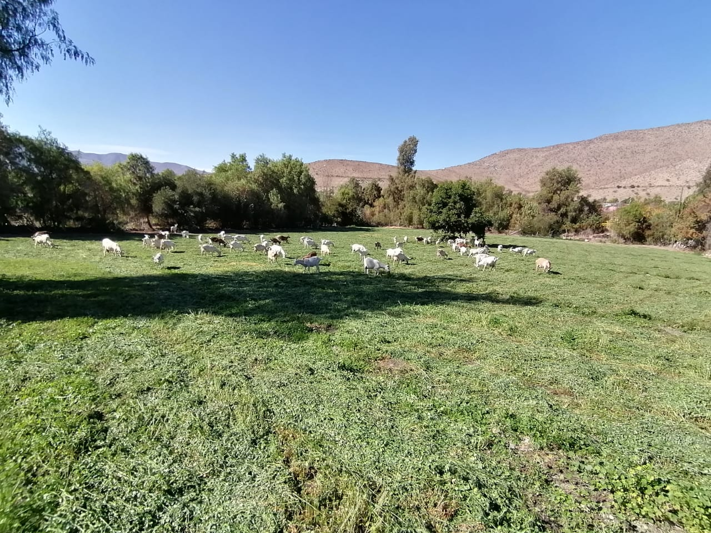
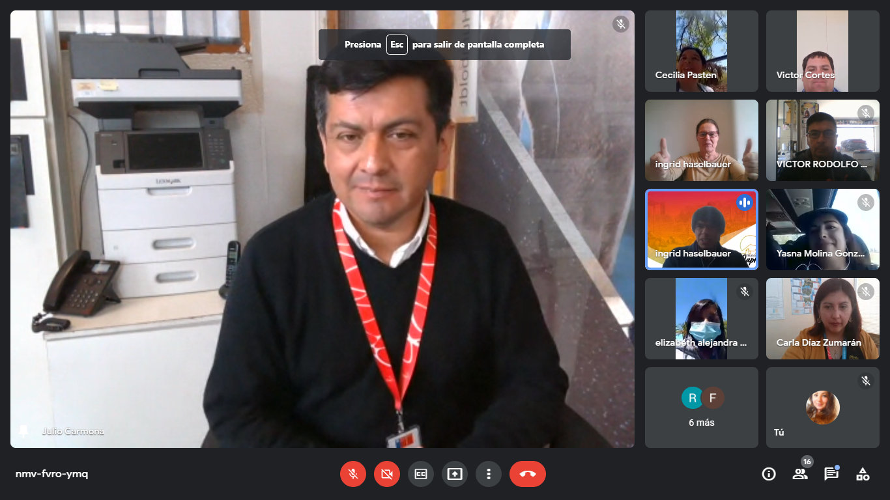

La iniciativa es promovida por el Programa Transforma Caprino, de Corfo, en colaboración con el Servicio Nacional de Turismo (Sernatur).

«Requerimientos básicos para desarrollar una oferta turística en el sector caprino» fue el nombre de la capacitación realizada recientemente, que tuvo por objetivo entregar los lineamientos iniciales para dar forma a un servicio turístico por parte de los capricultores. La idea es darles un respaldo formativo a todos quienes buscan innovar, generando servicios turísticos que permitirán dar a conocer un estilo de vida rural ancestral, donde toda la familia se involucra en las labores de criar, alimentar, ordeñar y elaborar los quesos de cabras de la Región de Coquimbo.
Ingrid Haselbauer, médico veterinario y gerente del Programa Transforma Caprino, indicó que «la idea es entregar otra herramienta más para diversificar las líneas de negocios en torno a la actividad caprina, esta vez, enfocada en el área turística. Nosotros creemos que la situación económica que se está dando, que de por sí es difícil, nos está haciendo un llamado a prepararnos para el futuro, esto no es algo a corto plazo. Debemos anteponernos y diversificar las líneas de negocios en torno a esta actividad tan característica de nuestra región».
La sesión fue impartida por Julio Carmona, encargado de la Oficina de Información Turística y Registro de Sernatur Coquimbo, quien posee amplia experiencia en dicha nómina de prestadores de servicios turísticos, por lo que pudo compartir con los asistentes recomendaciones para iniciar y formalizar un servicio turístico de forma correcta.
En este sentido, el encargado explicó que «estas instancias son muy productivas para poder entregarles a los participantes todos los lineamientos y requerimientos para formalizar una oferta turística. Esto les será de gran utilidad para dar curso a una nueva línea de negocios en su actividad y orientar a quienes ya están incursionando en esta área. En esta línea, Sernatur siempre será un gran aliado para ellos, en términos de asociatividad, promoción y formación»
Además, añadió que «he podido compartir con ellos los beneficios que brinda pertenecer al Registro Nacional de Prestadores de Servicios Turísticos de Sernatur, por ejemplo, formalizar su incorporación a la oferta turística nacional, ser publicado de manera gratuita en el buscador de servicios, acceder a capacitaciones, conectarse con programas de fomento y asociatividad, y finalmente, ser parte de las acciones de promoción de Sernatur en todas sus plataformas».
Esta actividad se enmarca en los objetivos estratégicos del Programa Transforma Caprino de Corfo, que señala la necesidad de diversificar y sofisticar la oferta de productos y servicios caprinos a nivel regional y nacional.
En este sentido, Gregorio Rodríguez, director de Corfo Coquimbo, explicó que «estas iniciativas son una mirada al futuro, ya que el mundo caprino es diverso, rico en cultura y patrimonio, y eso debe compartirse. Hoy las personas no solo quieren comer un rico queso de cabra, sino que también quieren conocer cómo se hace, cómo se extrae la leche, cómo es el día a día de quienes dedican su vida a eso y eso tiene un potencial increíble para ellos. Diversificar es necesario y en este sentido, el Programa Transforma Caprino será un gran aporte para el sector, tal como lo viene siendo hace años».
Transforma Caprino es un programa que busca impulsar la cadena de valor del rubro caprino, focalizado en diversas comunas de la región, como Canela, Combarbalá, Punitaqui, Monte Patria e Illapel. Corresponde a una iniciativa de Corfo, que cuenta con financiamiento del Gobierno Regional, a través del Programa de Zonas Rezagadas. Para quien desee ver nuevamente la charla, puede hacerlo a través del siguiente enlace: https://fb.watch/9ehd0cJIu5/.
